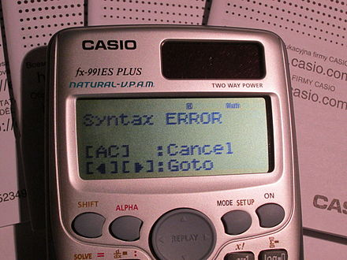
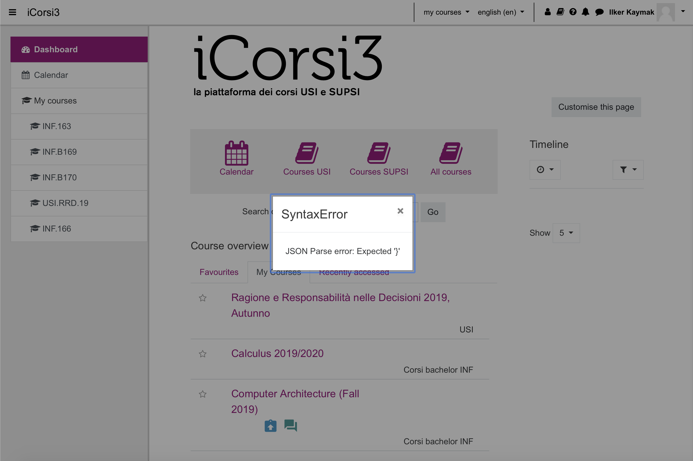
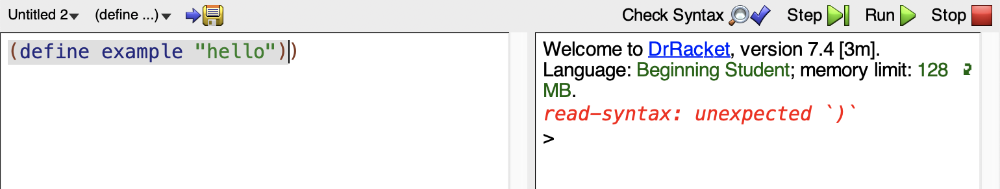

Syntax Error
What is a Syntax Error?
One of most common human-cause bug is the syntax error. A syntax error is an error in the code of a software, in which the syntax is not written in the correct way of the programming language. Usually a program will not run until there aren’t any syntax errors left, however that’s not always true. A syntax error may not be detected, and it can produce an unexpected output, because a computer doesn’t know what really the programmers mean and want. In most cases, a syntax error can happen due to a typing error of the programmer. The syntax error is common on scientific calculators, an example is when there is a missing open bracket.
some Examples


